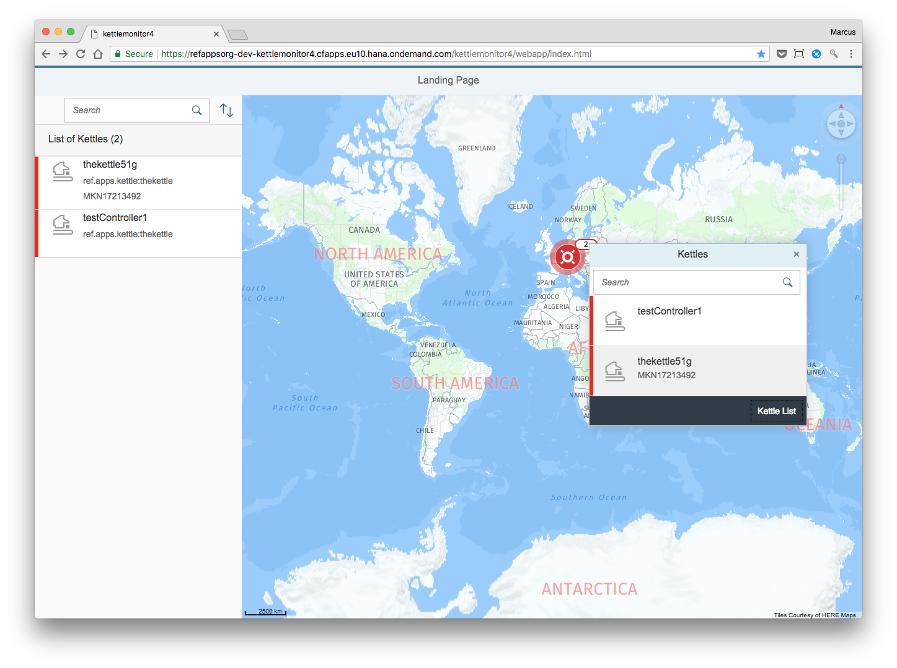
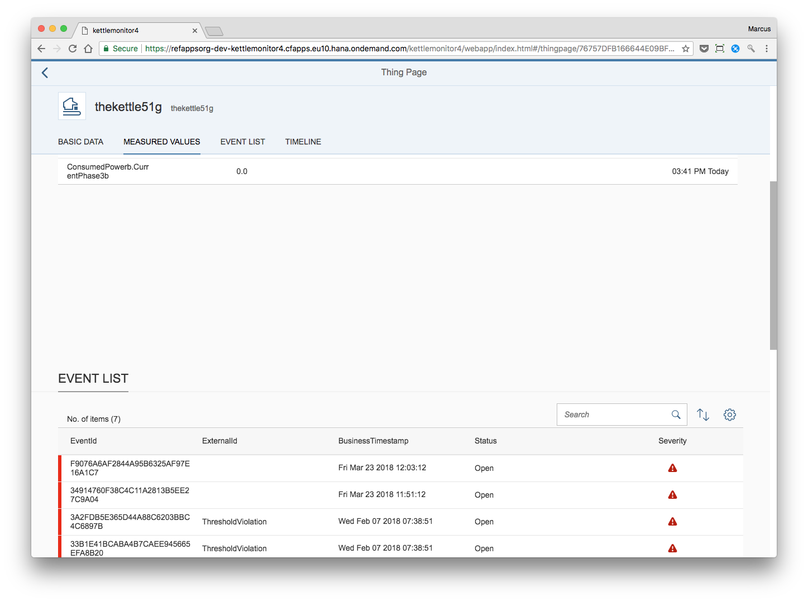
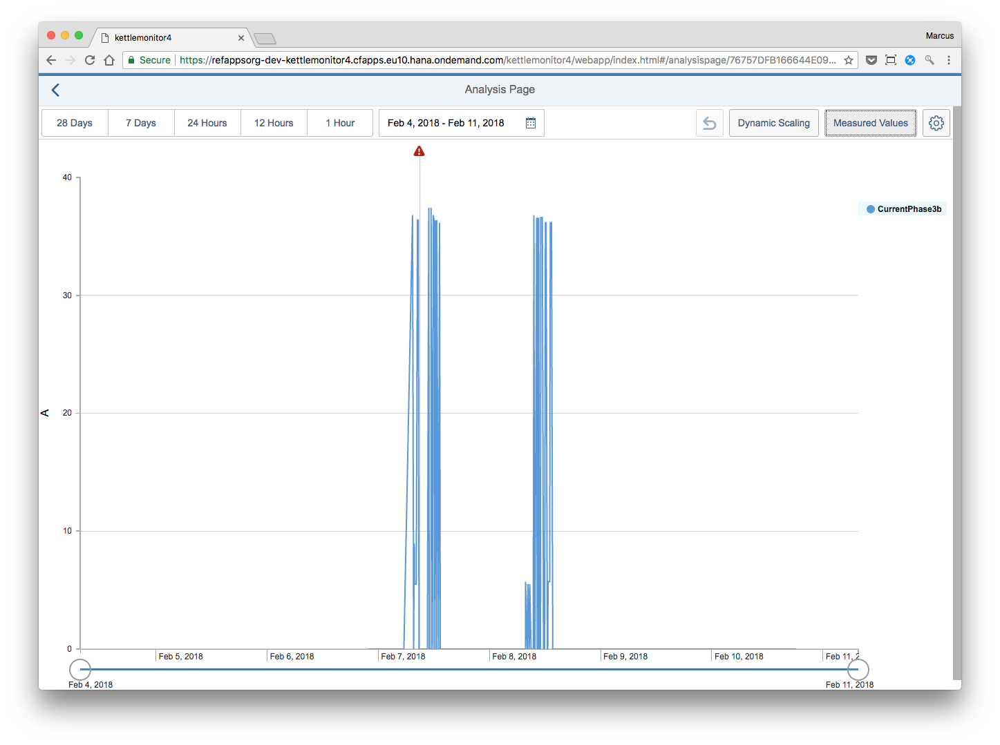
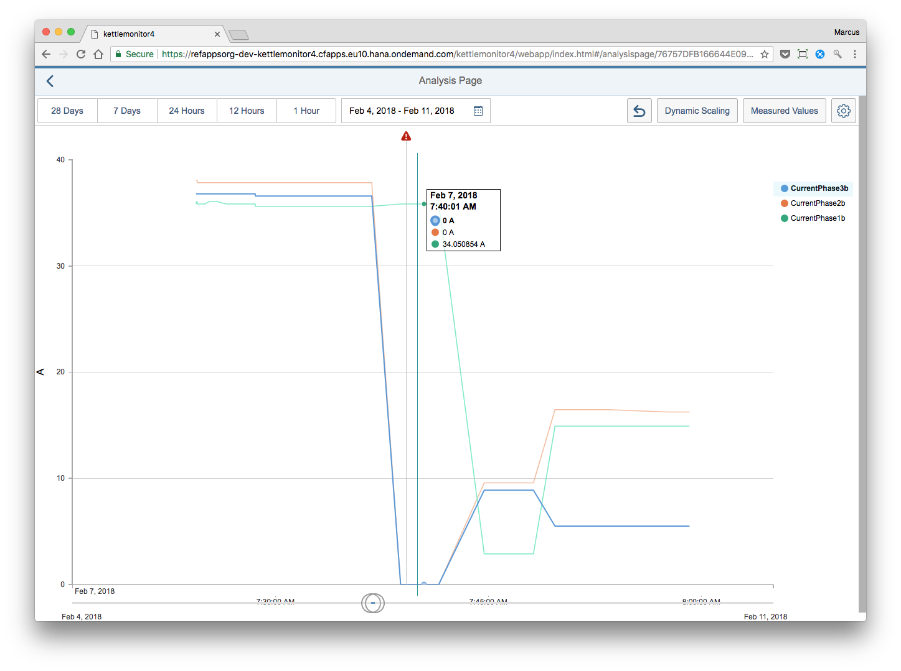

This is a quick manual explaining how the kettlemonitor app works. The app can be started here: <a href="index.html">index.html</a>

On the first screen shown below you see all kettles. At first we only have hooked up kettle51 and one test device that generates test data continously. Click on the 2 kettles in the map and choose the one you want to take a closer look at.



Now you can see the current measurements for the 3 phases of this kettle. If you click on one you can see the details for the last 24 hours for this measure.

You can also see a list of events. this is where a model is applied on the incoming data that looks for potential errors. One indication of an error is if one phase is low and the others are high - this should not occur in normal operation and is an indication for a technical problem.

To continue you might want to click on one of the events from Feburary 7th to show the context of the event in a chart.



In the sensor chart you first might want to add all 3 phases into the chart. use the button in the upper right corner to do so and maybe change the setting to "remember" those measures.



Now you can use the mouse to zoom into the timeframe that you need. You can zoom into the past (will be served from the cold store) or into the present (coming from the warm store). Even visually you can discovere interesting patterns for future models.



